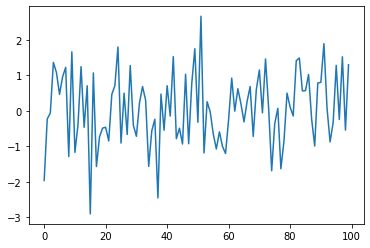
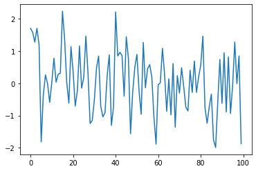
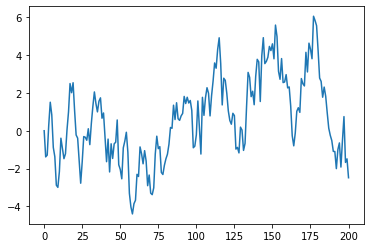
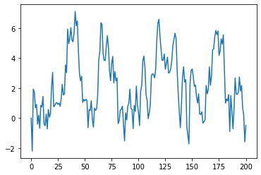
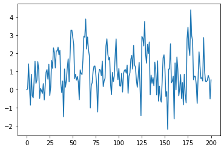

%matplotlib inline
import numpy as np
import matplotlib.pyplot as plt
ϵ_values = np.random.randn(100)
plt.plot(ϵ_values)
plt.show()

np.sqrt(4)
2.0
np.log(4)
1.3862943611198906
import numpy
numpy.sqrt(4)
2.0
import numpy as np
np.sqrt(4)
2.0
from numpy import sqrt
sqrt(4)
2.0
ϵ_values = np.random.randn(100)
plt.plot(ϵ_values)
plt.show()

ts_length = 100
ϵ_values = [] # empty list
for i in range(ts_length):
e = np.random.randn()
ϵ_values.append(e)
plt.plot(ϵ_values)
plt.show()

x = [10, 'foo', False]
type(x)
list
x
[10, 'foo', False]
x.append(2.5)
x
[10, 'foo', False, 2.5]
x
[10, 'foo', False, 2.5]
x.pop()
2.5
x
[10, 'foo', False]
x[0] # first element of x
10
x[1] # second element of x
'foo'
for i in range(ts_length):
e = np.random.randn()
ϵ_values.append(e)
animals = ['dog', 'cat', 'bird']
for animal in animals:
print("The plural of " + animal + " is " + animal + "s")
The plural of dog is dogs
The plural of cat is cats
The plural of bird is birds
ts_length = 100
ϵ_values = []
i = 0
while i < ts_length:
e = np.random.randn()
ϵ_values.append(e)
i = i + 1
plt.plot(ϵ_values)
plt.show()

r = 0.025 # interest rate
T = 50 # end date
b = np.empty(T+1) # an empty NumPy array, to store all b_t
b[0] = 10 # initial balance
for t in range(T):
b[t+1] = (1 + r) * b[t]
plt.plot(b, label='bank balance')
plt.legend()
plt.show()

import numpy as np
import matplotlib.pyplot as plt
numbers = [-9, 2.3, -11, 0]
for x in numbers:
if x < 0:
print(-1)
else:
print(1)
-1
1
-1
1
import numpy as np
α = 0.9
T = 200
x = np.empty(T+1)
x[0] = 0
for t in range(T):
x[t+1] = α * x[t] + np.random.randn()
plt.plot(x)
plt.show()

α_values = [0.0, 0.8, 0.98]
T = 200
x = np.empty(T+1)
for α in α_values:
x[0] = 0
for t in range(T):
x[t+1] = α * x[t] + np.random.randn()
plt.plot(x, label=f'$\\alpha = {α}$')
plt.legend()
plt.show()

α = 0.9
T = 200
x = np.empty(T+1)
x[0] = 0
for t in range(T):
x[t+1] = α * np.abs(x[t]) + np.random.randn()
plt.plot(x)
plt.show()

α = 0.9
T = 200
x = np.empty(T+1)
x[0] = 0
for t in range(T):
if x[t] < 0:
abs_x = - x[t]
else:
abs_x = x[t]
x[t+1] = α * abs_x + np.random.randn()
plt.plot(x)
plt.show()

α = 0.9
T = 200
x = np.empty(T+1)
x[0] = 0
for t in range(T):
abs_x = - x[t] if x[t] < 0 else x[t]
x[t+1] = α * abs_x + np.random.randn()
plt.plot(x)
plt.show()

n = 100000
count = 0
for i in range(n):
u, v = np.random.uniform(), np.random.uniform()
d = np.sqrt((u - 0.5)**2 + (v - 0.5)**2)
if d < 0.5:
count += 1
area_estimate = count / n
print(area_estimate * 4) # dividing by radius**2
3.1378